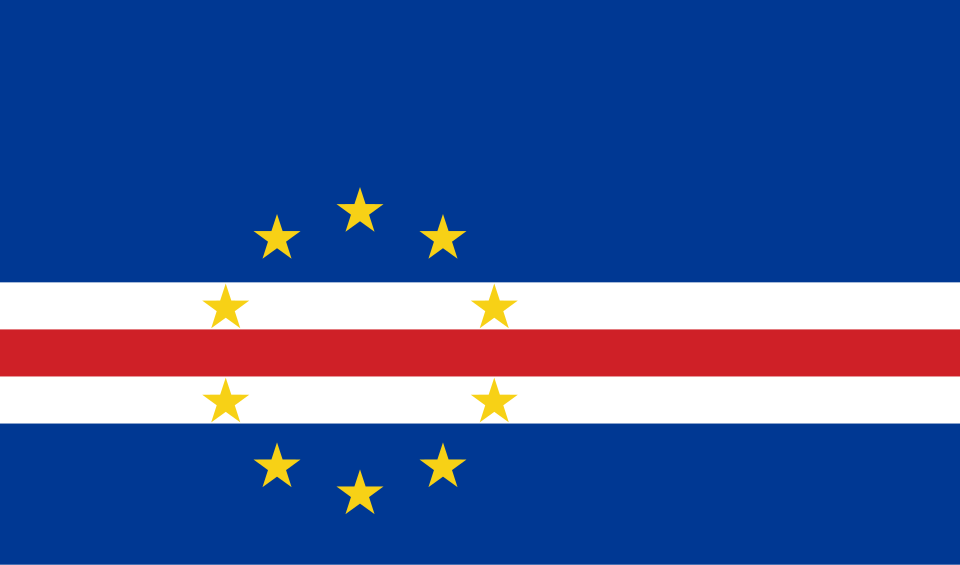

About Me
I am Robson Correia, I'm' 36 years old and I'm from Cabo Verde. I'm Married since 2014 and I've got 4 children. ducating my children according to the principles of the gospel is one of my main goals. Actually I work as Coordinator of the Information Systems Office at the Civil Aviation Authority of Cabo Verde
Praia, Cabo Verde

A truly striking and somewhat paradoxical fact about Cabo Verde is the profound influence of its diaspora. It's estimated that the number of Cape Verdeans living in other countries significantly outweighs the population residing within the ten islands of the archipelago. This extensive emigration, driven by historical factors such as recurring droughts and limited economic opportunities on the islands, has resulted in vibrant Cape Verdean communities flourishing across the globe, particularly in the United States, Portugal, France, Senegal, and several other nations.